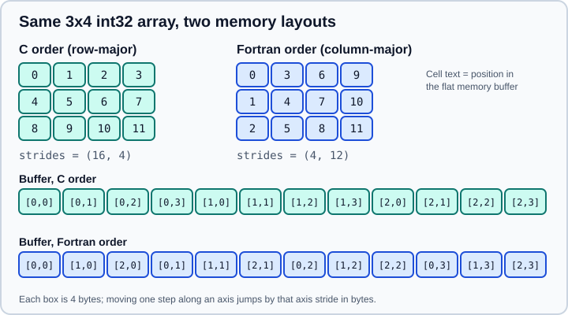

Memory Layout and Strides
|
This content was generated with the assistance of AI and should be verified against the official documentation before being relied on in production. |
This page was checked in October 2026 against NumPy 2.5 (2.5.4 is the latest patch release). Examples target Python 3.13 or 3.14 and were run on Python 3.13. The printed output was produced with NumPy 2.5.4. A NumPy array separates data from interpretation. The data is one flat block of bytes. The interpretation is the dtype (how to read each item), the shape (how many items per axis) and the strides (how many bytes to jump to move one step along each axis). Almost every cheap NumPy operation, such as slicing, transposing and broadcasting, only changes the interpretation and never touches the data. Understanding strides explains why those operations are views (see Copies and Views) and why some are much faster than others.
Shape, strides, itemsize and nbytes
import numpy as np
a = np.arange(12, dtype=np.int32).reshape(3, 4)
print(a.shape, a.strides, a.itemsize, a.nbytes)(3, 4) (16, 4) 4 48
itemsize is the size of one element in bytes (4 for int32), and nbytes is size * itemsize. The strides (16, 4) say that moving one column forward jumps 4 bytes and moving one row forward jumps 16 bytes, which is a whole row of four 4-byte items. The byte offset of a[i, j] from the start of the buffer is therefore i * 16 + j * 4. This layout is C order (also called row-major): the last index changes fastest.
Fortran order (column-major) stores the first index fastest, so the strides of the same array are (4, 12).

f = np.asfortranarray(a)
print(f.strides, f.flags['F_CONTIGUOUS'], f.flags['C_CONTIGUOUS'])
print(np.array(a, order='F').strides, np.zeros((3, 4), order='F').strides)
print(a.reshape(4, 3, order='F'))
print(a.ravel(order='F'), a.ravel(order='K'), f.ravel(order='K'))(4, 12) True False (4, 12) (8, 24) [[ 0 5 10] [ 4 9 3] [ 8 2 7] [ 1 6 11]] [ 0 4 8 1 5 9 2 6 10 3 7 11] [ 0 1 2 3 4 5 6 7 8 9 10 11] [ 0 4 8 1 5 9 2 6 10 3 7 11]
The order argument of creation functions, reshape, ravel, flatten and copy takes 'C', 'F', 'A' (Fortran if the input is Fortran-contiguous and not C-contiguous, else C) and 'K' (keep the order of the input as closely as possible). Note that for reshape and ravel the order also defines the logical reading order of the elements, so reshape(4, 3, order='F') gives different values from reshape(4, 3), not just a different memory layout. The default for new arrays is C order, which matches the C-based libraries and most NumPy code. Fortran order matters when calling LAPACK-based routines (SciPy wrappers may convert for you) and when reading data written by Fortran or MATLAB.
Contiguity flags
arr.flags summarises the layout. The important entries are C_CONTIGUOUS and F_CONTIGUOUS (the buffer is one dense block read in that order), OWNDATA (the array owns its buffer, see base), WRITEABLE and ALIGNED.
print(a.flags.c_contiguous, a.flags.f_contiguous, a.flags.writeable, a.flags.aligned)
print(a.T.strides, a.T.flags['F_CONTIGUOUS'])
print(a[::2, ::-1].strides, a[:, 1].strides)True False True True (4, 16) True (32, -4) (16,)
-
The transpose
a.Tswaps the strides,(4, 16), so it is a view and it is F-contiguous. No data move. -
A slice with a step multiplies the stride:
a[::2]doubles the row stride. -
A negative step produces a negative stride, so
a[::2, ::-1]has strides(32, -4)and starts at the last column of the first row. -
A single column
a[:, 1]is a 1-D array with stride 16: its elements are not adjacent in memory, which affects speed.
An array may be neither C- nor F-contiguous (for example a[::2, ::2]). Functions that need contiguous memory, such as ravel() or a call into compiled code, silently copy such arrays. np.ascontiguousarray and np.asfortranarray make the copy explicit.
Strides in higher dimensions
Moving an axis only permutes the strides. transpose and np.moveaxis therefore never copy:
n = np.ones((3, 4, 5))
print(n.strides, n.transpose(2, 0, 1).strides, np.moveaxis(n, 0, -1).strides)(160, 40, 8) (8, 160, 40) (40, 8, 160)
Structured arrays (see Structured Arrays) have a stride equal to the record size, so a field such as rec['x'] is a strided view into the interleaved records.
rec = np.zeros(3, dtype=[('x', 'f8'), ('i', 'i4')])
print(rec.strides, rec.itemsize, rec['x'].strides)(12,) 12 (12,)
Packed records use 12 bytes here. With np.dtype(..., align=True) NumPy pads fields to their natural alignment (16 bytes in this case), which is described on the structured arrays page.
Zero strides: broadcasting without copying
Broadcasting repeats an array along an axis by giving that axis a stride of 0, so the same bytes are read repeatedly. np.broadcast_to exposes this and returns a read-only view:
bx = np.broadcast_to(np.arange(3), (4, 3))
print(bx.strides, bx.flags.writeable)
b = np.broadcast_to(np.arange(3)[:, None], (3, 4))
print(b.strides)(0, 8) False (8, 0)
The array is 12 elements but only three are stored. Because several logical elements share one memory location, writing through such an array would be ambiguous, so NumPy makes it read-only. Copy it (bx.copy()) before modifying it. The shape rules are in Broadcasting.
Window views with sliding_window_view and as_strided
Overlapping windows are the classic strides trick. The safe function is np.lib.stride_tricks.sliding_window_view, which builds a read-only view:
x = np.arange(8, dtype=np.int64)
w = np.lib.stride_tricks.sliding_window_view(x, 3)
print(w)
print(w.shape, w.strides, w.flags.writeable)
print(np.lib.stride_tricks.sliding_window_view(np.arange(12).reshape(3, 4), (2, 2)).shape)[[0 1 2] [1 2 3] [2 3 4] [3 4 5] [4 5 6] [5 6 7]] (6, 3) (8, 8) False (2, 3, 2, 2)
The window array has 18 logical elements over only 8 stored values; the strides (8, 8) say that moving to the next window and moving within a window both advance 8 bytes. Rolling statistics, convolutions and time-series windowing (for example when preparing features for a model) can use it, with the caveat that any reduction over the windows still performs the full number of operations. The lower-level as_strided builds the same view from explicit shape and strides:
s = np.lib.stride_tricks.as_strided
w2 = s(x, shape=(6, 3), strides=(8, 8))
print(np.array_equal(w, w2))True
as_strided performs no bounds checks. A wrong shape or stride reads memory beyond the buffer and can return garbage or crash the interpreter, and a writeable result with overlapping windows has undefined behaviour. Prefer sliding_window_view, and pass writeable=False to as_strided if you must use it.
Viewing the same bytes with another dtype
arr.view(dtype) reinterprets the memory with a different dtype. If the item size changes, the last axis is rescaled, which requires that axis to be contiguous:
v = a.view(np.int16)
print(v.shape, v.strides)
try:
a.T.view(np.int16)
except ValueError as e:
print("ValueError:", e)(3, 8) (16, 2) ValueError: To change to a dtype of a different size, the last axis must be contiguous
Each 4-byte int32 became two 2-byte int16 values, so the last axis doubled from 4 to 8. Reading floating-point data as integers through view is a legitimate technique for bit manipulation, but the result depends on the machine byte order (see a.dtype.byteorder). In NumPy 2.5, assigning to arr.dtype is deprecated, and view is the replacement.
Why layout affects speed
Modern CPUs read memory in cache lines, so walking through adjacent addresses is fast and jumping by a large stride is slow. Reductions along the contiguous axis, and slicing a row rather than a column of a C-ordered array, are the fast patterns. With a large array you can see it:
import timeit
m = np.random.default_rng(0).random((4000, 4000))
col = timeit.timeit(lambda: m[:, 0].sum(), number=200)
row = timeit.timeit(lambda: m[0, :].sum(), number=200)
print(round(col, 4), round(row, 4))0.001 0.0001
On this machine summing a strided column took about ten times as long as summing a contiguous row of the same length. The ratio depends on the CPU and the array size, so measure on your own hardware. NumPy’s reductions and ufuncs iterate in an order chosen from the strides, so m.sum(axis=0) and m.sum(axis=1) are close to each other for a C-ordered array, but algorithms you write yourself, and code that passes columns to compiled libraries, benefit from keeping the hot axis contiguous. When an algorithm works column by column, consider storing the data in Fortran order or taking np.ascontiguousarray(m.T) once.
Inspecting memory
A few attributes expose the buffer for debugging and interop: arr.data is a Python memoryview, arr.ctypes.data is the address of the first element, and arr.__array_interface__ is the array interface dictionary that other libraries (and the buffer protocol described on Interoperability) use to read NumPy memory without copying. For a C-contiguous array the interface reports strides as None, which means default C strides.
Setting strides and shape directly
Older code assigns to arr.strides or arr.shape to change the interpretation in place. Both are deprecated: setting strides since NumPy 2.4 and setting shape since NumPy 2.5.
try:
a.strides = (4, 16)
except Exception as e:
print(type(e).__name__, e)ValueError strides is not compatible with available memory
Source: NumPy reference: numpy.ndarray.strides and NumPy reference: numpy.lib.stride_tricks.as_strided
Running this with warnings enabled also prints DeprecationWarning: Setting the strides on a NumPy array has been deprecated in NumPy 2.4, whose suggestion is to create a new view with np.lib.stride_tricks.as_strided. For shapes, use reshape.
Common pitfalls
-
Assuming
a.Tcopies. It is a view; writing to the transpose changes the original. -
Assuming
ravel()is free. It copies for non-contiguous input, andflatten()always copies. -
Using
as_stridedon user input. It performs no bounds checks. -
Writing into
broadcast_toor window views. They are read-only because many logical elements share memory. -
Mixing up order and logical order.
reshape(order='F')changes which element goes where, not only the layout. -
Ignoring the stride of the last axis when calling
viewwith a different dtype. -
Timing a strided access once. Cache effects need repeated measurements on a realistic size.
Older tutorials and books
| Older statement | Current behaviour | Use instead |
|---|---|---|
Set |
Deprecated in NumPy 2.4 |
|
Set |
Deprecated in NumPy 2.5 |
|
Set |
Deprecated in NumPy 2.5 |
|
Windows via |
No bounds checking; overlapping writes are undefined |
|
|
|
2-D |
Related pages
-
Copies and Views for the sharing consequences of strides.
-
Data Types for itemsize, byte order and alignment.
-
Broadcasting for zero strides.
-
Reshaping, Stacking and Splitting for
reshapeand the order argument. -
Threads, Free-Threading and Performance for performance tuning beyond layout.